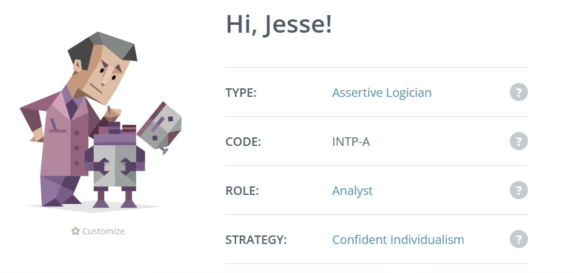
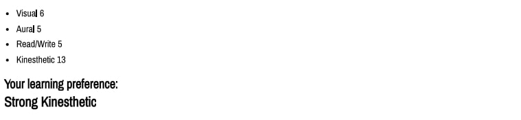
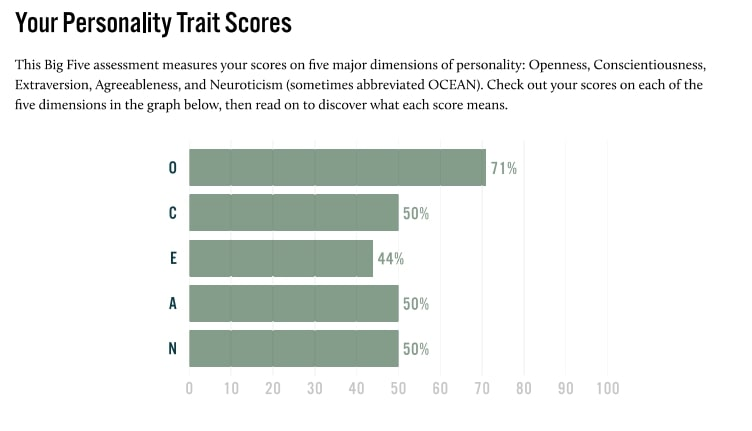

Personal Information
Jesse Corlet
Student number: s3931356
Student email: s3931356@student.rmit.edu.au
Some interesting stuff about me: I was born in Australia but was able to get South African citizenship around 5 years ago because my mum immigrated to Australia from South Africa when she was 11. I have a Diploma in Screen and Media I completed instead of Yr10 - Yr12. I have too many interests to list here although I love rap music and enjoy playing poker.
Interest in IT
What is my interest in IT? When did my interest in IT start?
My interest in IT covers a wide range of topics like using machine learning to predict financial markets, the possibility of true artificial intelligence, advancements in robotics, self-driving cars, and cryptocurrency smart contract use cases. What excites me are the fields in IT that are still being developed, the forefront of technology. I have had a varying degree of interest in IT for my entire life but only decided to start learning about it in detail a couple of months before I started this course. Since then, I have learned some basics in Python and started a few of my own projects, one of which utilizes the Selenium package to create TikTok accounts.
Why did I choose to come to RMIT (Royal Melbourne Institute of Technology)?
Considering how the pandemic has affected the world I decided to study in a field that is able to support working remotely when necessary. RMIT offered an online study option which was also really appealing to me.
What do you expect to learn during your studies?
Since starting the IT and programming introductory units I have begun to discover what interests me more specifically in the massive field of IT. I have considered a computer science degree instead of an IT degree, but I still have not completely decided so I cannot say what I expect from the next 3 years of my study but from these two introductory units, I expect to learn the fundamentals of programming, teamwork and collaboration skills, and a general understanding of the IT industry.
Ideal Job
Machine Learning Engineer

A description of the position, and particularly what makes this position appealing to me.
This job entails developing machine learning algorithms for medical image analysis. I would be working with a research and development team building software designed to help identify and assess a wide range of medical conditions. More specifically preparing training and testing data for machine learning, being able to identify what algorithms to use, and validating the results.
The skills, qualifications and experience required for the position.
This position would require high-level knowledge of an array of skills including understanding of probability, statistics and machine learning algorithms, coding in Python, and being able to apply machine learning algorithms to large data sets. The use of packages in Python like Tensorflow or PyTorch and development environments
like Jupyter Notebook are the tools widely used to execute machine learning projects today.
The skills, qualifications and experience I currently have.
I am currently learning coding in Python which would be the only skill I have relative to this role.
How I plan to obtain the skills, qualifications and experience required for the position.
Skills like using Tensorflow, Pytorch, and Jupyter Notebook can be taught at home by watching Youtube, reading documentation, and applying what you have learned to small personal projects. A deeper understanding of the machine learning and deep learning algorithms used by Tensorflow and PyTorch is something I would prefer to learn through a Computer Science degree as opposed to being self-taught because it becomes a lot more technical.
Profile
Myers-Briggs Test: Logician (INTP-A)

Learning Style Preference Test: Strong Kinaesthetic

OCEAN Personality Test:

What do the results of these tests mean for you?
My MBTI test results indicate that I am an INTP-A or logician. Although an MBTI should be taken with a grain of salt, my results described me well. Certain things I relate to are having trouble executing my ideas, valuing thinking logically, and I can be indecisive when it comes to important decisions.
My learning style test indicates that my learning preference is Strong Kinaesthetic. I prefer practical examples, trial-and-error, case studies, things that I can experience to learn effectively. I know from my personal experience that explaining concepts aloud to myself or others is a technique that works for me that was not listed in my report.
Finally, my Big Five assessment measures my scores on five major points of personality: openness, conscientiousness, extraversion, agreeableness, and neuroticism. I score high in openness which describes my tendency to think in abstract, complex ways. I score low in extraversion which describes my inclination to seek stimulation from the exterior world, particularly in the form of attention.
How do you think these results may influence your behaviour in a team?
The results of these tests mean that some of the difficulties I may have while working with a team is my indecisiveness, meaning I may leave projects till the last minute before sharing them with other team members. I will have to consider the entire team as opposed to just managing myself which will be a new challenge for me.
How should you take this into account when forming a team?
I think I would benefit from a team with a decisive leader. Although I do love to work alone for the reason it gives me complete control over my projects when I work with a group, I prefer to give up control because I no longer consider it my project. This is something I will need to overcome eventually.
Project
Overview
My project is a web application written in Python 3 that will, when given information on a hand of Blackjack, tell you how to play based on 'Basic Strategy' rules. It will also use the 'Hi-Lo' card counting system. 'Basic Strategy' and 'Hi-Lo' are techniques advanced Blackjack players use to try and beat the house; my project will feature an intuitive design that allows any player to use these strategies. The project will utilize a graphical user interface so that it is designed to be able to be used 'live' while playing a game, not discreetly, just for testing purposes.
Motivation
My motivation for this project is to build a program that tells the user exactly how to play a particular hand of Blackjack based on Basic Strategy and the Hi-Lo card counting system, giving any player the opportunity to utilize an optimal playing strategy. I also plan to use this project as a learning experience to further understand how to write code that instructs a computer to give a result based on many variables that would ordinarily take a long time to write out without the proper use of the coding language.
Description
There are 2 main parts to this project, 1. Basic Strategy (Blackjack - Wikipedia, n.d.) and 2. Hi-Lo Card Counting System (Card counting - Wikipedia, n.d.). Basic Strategy tells the player if they should Hit, Stand, Double or Split. The Hi-Lo system keeps a count of cards that have been played and are no longer present in the deck and assigns an amount the player should bet before each hand. The Hi-Lo counting system must be reset whenever the discarded cards are reshuffled back into the deck.
Basic Strategy is a set of rules defined by Roger Baldwin, Wilbert Cantey, Herbert Maisel, and James McDermott (better known as the Four Horseman of the Apocalypse) (Four Horsemen of the Apocalypse (blackjack) - Wikipedia, n.d.). Basic strategy states which action the player should take based on the dealer's cards and the player's cards.
Strategies in Blackjack differ depending on several variables that are set before a game is played, like, number of decks and if a dealer hits on soft 17 (soft 17 is a hand that adds up to 17 and has an ace in it). For this project we will stick to these rules:
⦁ 4, 6, or 8 decks
⦁ dealer hits soft 17
⦁ a double is allowed after a split
⦁ only original bets are lost on dealer blackjack (meaning if the dealer hits blackjack, the player only loses their original bet opposed to when the player hits blackjack the dealer must pay out 2:1 or sometimes 3:2 depending on the game)
The Hi-Lo system works by keeping a running count and converting that into a true count and multiplying that into a betting unit like this.
⦁ for every 2, 3, 4, 5, or 6 card, 1 is added to the running count
⦁ for every 7, 8, or 9 card, no change to the running count is made
⦁ for every 10, King, Queen, Jack, or Ace, 1 is subtracted from the running count
⦁ the running count is then divided by the number of decks and subtracted by 1 to get the true count
⦁ the true count is then multiplied by the games betting unit
The user will input the dealer's cards and player's cards each betting round as the game progresses. The program will determine the action the player should take based on these inputs assigned to the strategies discussed. As each round progresses the information of which cards have been spent makes the accuracy of the card counting stronger until the deck is reshuffled.
Tools and Technologies
The backend for this project will entirely be written in Python. A Python interpreter like VSCode, Atom, or IDLE will be necessary. The frontend or what the user sees may use HTML and CSS (Cascading Style Sheets) if it is released as a web application with a graphical user interface. Otherwise, it will be run in the terminal and take written inputs from the user.
Skills Required
The skills required to complete this project are an understanding and ability to write Python, some HTML and CSS knowledge. Knowledge of Blackjack rules, Basic Strategy, and the Hi-Lo card counting system.
Outcome
The problem I am trying to solve is the gap between professional players and beginners. If this project is successful anyone with a little bit of Blackjack knowledge will be able to play with an optimal strategy and gain intuitive knowledge on how to play like a professional. I believe that this will give inexperienced players a fairer chance and hopefully by demonstrating an extremely specific optimal strategy even deter some people from gambling by taking the fun out of it.